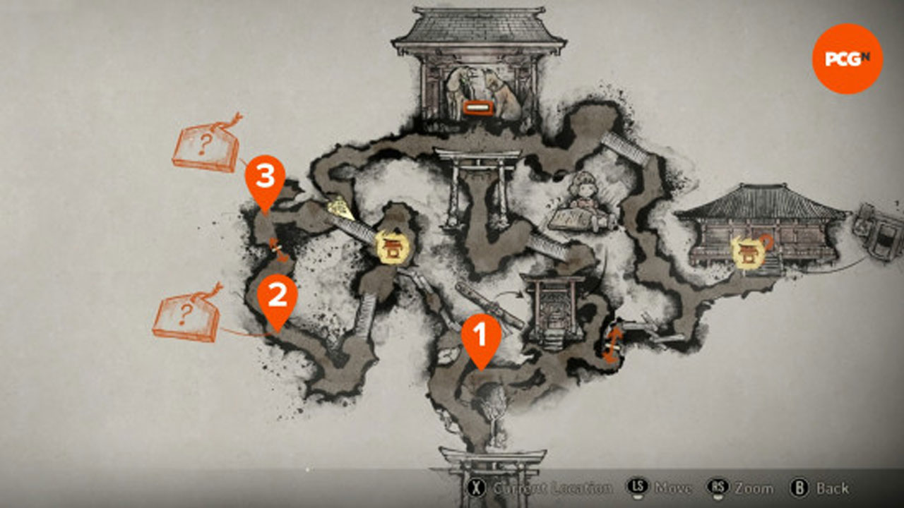

Shrine Puzzle (Ema) — Walkthrough & Wiki
Keep your breath low. Three ema wait on three creaking boards. Find the right carvings, turn the plaques, and feed the vault with their marks. Fast answers below; if you prefer the logic, we leave the thread.
Route at a Glance
Follow the map marks: first board to the north, second cluster to the southwest, then back to the Shrine Vault to input the symbols. (Diagram is a placeholder—replace once your in-game map screenshots are ready.)
Direct Answers by Difficulty
Story — Find These Three Ema (in this order)
Hard — Find These Three Ema
Lost in the Fog — 2-4-3 Decoding (fast method)
Read the poem. Each of the three yokai paintings tells you which body parts were removed. Count them, then use that number to pick the symbol on each journal row (each row has 4 symbols, count left→right).
- Carriage yokai: 2 heads → pick the 2nd symbol (top row).
- Umbrella yokai: 4 arms → pick the 4th symbol (middle row).
- Kettle yokai: 3 legs → pick the 3rd symbol (bottom row).
Step-by-Step Walkthrough
Understanding the Puzzle
The Shrine Puzzle requires you to find three specific ema (wooden plaques) from various shrine boards scattered around the area. Each ema contains a symbol that must be input into the shrine vault to progress.
General Strategy
- Explore the Shrine Grounds: Visit all shrine boards marked on your map
- Examine Ema Carefully: Each board has multiple ema, but only specific ones are correct
- Flip and Inspect: Turn each ema to see the symbols on the back
- Return to Vault: Input the three symbols in the correct order
Route Optimization
The most efficient route is north board first, then southwest cluster, finally returning to the central vault. This minimizes backtracking and ensures you don't miss any boards.
How to Verify You Picked the Right Ema
- Flip each ema—behind it you'll see four sigils; only one is correct.
- Journal mirrors the three rows of the vault; each row correlates to one of your ema finds.
- If a dial won't register, re-check that the ema was one of the unique ones (duplicates = decoys).
Difficulty-Specific Tips
Story Mode
The symbols are clearly visible and easy to identify. Follow the Serpent → Turtle → Crane sequence for guaranteed success.
Hard Mode
Look for nature-based symbols. Tree, Kudzu, and Lightning represent natural forces and are more abstract than Story mode symbols.
Lost in the Fog
This mode requires decoding yokai poetry. Read carefully and count body parts mentioned to determine the correct symbol positions using the 2-4-3 method.
Troubleshooting
- Kudzu vs other plants: zoom in on the lace-like vine pattern.
- If the counter shows 2/3: you missed one board—use the route diagram to backtrack.
- Localization can rename items: icons and shapes beat text.
- Vault won't accept symbols: double-check you have the correct ema and not decoy duplicates.
- Can't find all boards: check your map for shrine markers and explore thoroughly.